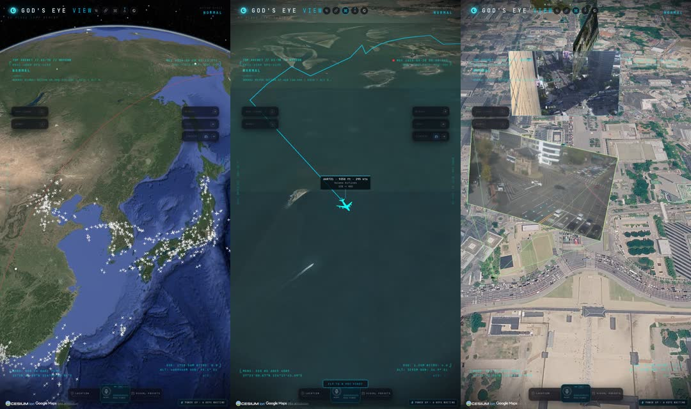
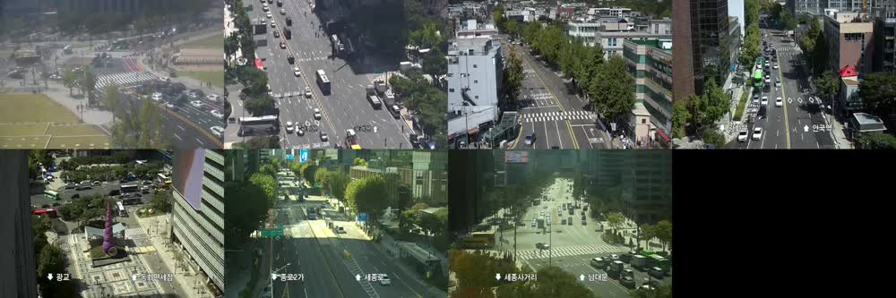

Bilawal Sidhu 가 만든 오픈소스 God's Eye View 예요. 영화 속 스파이 위성 화면처럼 생겼는데, 데이터는 전부 진짜 공개 데이터입니다. 항공기(OpenSky), 선박(AIS), 위성 궤도, 군용기, 지진, 산불, 도시 CCTV, 해저 케이블, 데이터센터 같은 층이 지구본 위에 실시간으로 올라가요.
2026년 8월 24일 공개 영상이 올라왔고, 제가 확인한 9월 20일 기준 GitHub 별 38,648개, 포크 7,804개였어요. README 에 층 15개 중 13개는 키 없이 된다고 적혀 있고, 실제로 키 하나 없이 항공기 층이 떴습니다.
※ 이 페이지의 숫자는 전부 제 서버에서 찍은 캡처와 같은 시각에 저장한 응답 파일에서 스크립트로 센 값이에요. 기간·분모는 아래 표에 적었습니다. 저는 원작자와 아무 관계가 없고, 그냥 깔아 쓴 사람입니다.
2026-09-20 11:22 KST, OpenSky 익명 states/all 응답 한 장 기준
| 무엇 | 값 | 어떻게 셌나 |
|---|---|---|
| 지금 공중에 있는 항공기 | 5,486대 | 응답 중 위치(경위도)가 있는 6,121대 가운데 on_ground=false 인 것 |
| 한반도 상공 | 109대 | 위도 33~39N · 경도 124~132E 상자 안, 공중. 지상 21대는 뺌 |
| 인천공항 50km 안 | 17대 | ICN(37.4602N, 126.4407E) 에서 하버사인 50km 이내, 공중. 지상 18대는 뺌 |
| GitHub 별 | 38.7k | api.github.com/repos/bilawalsidhu/gods-eye-view 의 stargazers_count 38,648 (2026-09-20 01:30Z) |
OpenSky 익명 응답은 커버리지가 시각마다 달라요. 여러분이 돌리면 다른 수가 나오는 게 정상이고, 그게 "지금" 값입니다. 앱이 adsb.lol 로 대체 응답을 받을 때는 250해리 반경만 오니까 "전 세계 수"로 읽으면 안 돼요.
Node.js 24 이상만 있으면 됩니다. 키는 없어도 항공기 층이 떠요
npm ci 하고 npm run dev 를 띄운 뒤 주소를 알려줍니다. 브라우저에서 http://localhost:4173 을 열면 지구가 떠요.https://github.com/bilawalsidhu/gods-eye-view 를 이 폴더에 클론해서 실행해 줘. 순서: git clone → cd gods-eye-view → Node 24 이상인지 확인(아니면 nvm 이나 fnm 으로 24 설치) → npm ci → npm run doctor → npm run dev 키는 아직 하나도 없으니 .env 는 만들지 마. 키 없이 되는 층(항공기·위성·지진·산불 등)만 확인하면 돼. 서버가 뜨면 내가 열 주소(http://localhost:4173)를 알려주고, 첫 화면에서 "Live Contacts" 를 고르면 된다고 안내해 줘. 설치 중 에러가 나면 원인과 고친 내용을 한 줄씩 보고해 줘.
git clone https://github.com/bilawalsidhu/gods-eye-view.git cd gods-eye-view npm ci npm run doctor npm run dev
원작 README 의 "Path 2 , Terminal / coding agent" 그대로예요. 서버는 기본으로 localhost 에만 붙어서 밖에서는 못 봅니다. 같은 와이파이에서 폰으로 보려면 npm run dev -- --host 0.0.0.0 --port 4173 로 직접 켜야 해요.
제가 실제로 켜 본 층 기준이에요
| 층 | 키 | 제 실측 |
|---|---|---|
| 항공기(OpenSky 익명 + adsb.lol) | 없음 | 키 없이 바로. 편명·출발→도착 라벨은 앱이 adsbdb 로 붙여요 |
| 위성·지진·산불·해저 케이블·라디오 | 없음 | README 기준 키 없이 됨(저는 항공기·선박·CCTV·3D 도시만 켰어요) |
| 선박(AIS) | AISStream 무료 가입 키 | .env 에 AISSTREAM_API_KEY=. 구독 상자를 한반도(32~40N, 122~132E)로 좁히면 가벼워요. 배 이름·속도까지 뜹니다 |
| 3D 포토리얼 도시(구글 타일) | Google Maps 타일 키 | GOOGLE_MAPS_API_KEY=. 월 무료 한도 안에서 됐어요. 광화문 3D 가 이 층입니다 |
| 도시 CCTV | 없음 | 기본은 오스틴 공개 카메라. 서울은 제가 아래처럼 직접 붙였어요 |
.env.example 에도 적혀 있어요. 발급할 때 Map Tiles API 만 켜고, 허용 도메인(리퍼러)을 localhost 로 제한하세요. 그리고 "전부 키 없이"는 아니에요. 항공기·위성은 키 없이, 선박·3D 도시는 키가 있어야 합니다.
원작엔 없어요. 서울시 TOPIS 공개 카메라를 앱 형식으로 넣은 것

topiscctv1.eseoul.go.kr)는 인증서 체인이 빠져 있어서 브라우저가 https 를 못 열어요. 그래서 로컬에 작은 중계(아래 코드, 포트 8791)를 두고 플레이리스트 주소만 바꿔 줍니다. 재인코딩은 안 해요.config/cctv_sources.*.json)으로 7대를 적고, 서버를 CCTV_SOURCES_FILE=config/cctv_sources.seoul.json npm run dev 로 켜면 지도 위에 카메라 판이 서요.gods-eye-view 에 서울 광화문 CCTV 를 붙이고 싶어. 아래 순서로 해 줘. 1) 서울시 TOPIS 지도 페이지의 CCTV 목록(https://topis.seoul.go.kr/map/cctv/selectCctvList.do 에 빈 POST)에서 광화문·광화문광장·경복궁역·안국사거리·청계광장·종로1가·시청 7대의 id·좌표·HLS 주소를 받아 cctv_kr/gwanghwamun_info.json 으로 저장해. 개별 HLS 주소는 모바일 상세(https://m.topis.seoul.go.kr/tab3/selectCctvList.do, cctvId=) 로 받는데, 그 전에 모바일 페이지를 한 번 GET 해서 세션을 만들어야 해. 2) 아래 hls_relay.js 를 cctv_kr/ 에 저장하고 node cctv_kr/hls_relay.js 로 띄워(포트 8791). TOPIS 호스트는 인증서 체인이 빠져 있으니 rejectUnauthorized:false 는 이 중계 안에서만 써. 3) config/cctv_sources.seoul.json 을 아래 샘플 형식으로 7대 적어. url 은 http://127.0.0.1:8791/<id>.m3u8, feedType 은 "hls". 방위각(headingDeg)은 영상을 보고 추정하고 headingConfidence 는 "low" 로 둬. 4) CCTV_SOURCES_FILE=config/cctv_sources.seoul.json npm run dev 로 다시 켜고, /api/cctv/sources 에 7대가 뜨는지 확인해서 보고해. 출처 표기는 "서울시 TOPIS · 서울경찰청", 비상업 참고용으로만 쓴다.
// TOPIS CCTV HLS 를 브라우저가 열 수 있게 중계한다. 인증서 체인이 빠진 호스트라 플레이리스트·세그먼트를 이 서버가 대신 받아 준다.
// 실행: node cctv_kr/hls_relay.js (포트 8791, 카메라 목록 gwanghwamun_info.json = [{id,name,hls,...}])
const http = require("http"), https = require("https"), { spawn } = require("child_process");
const CAMS = require("./gwanghwamun_info.json");
const PORT = +(process.env.PORT || 8791), UA = "Mozilla/5.0";
const byId = Object.fromEntries(CAMS.map((c) => [c.id, c]));
const get = (u) => new Promise((res, rej) => {
const r = https.get(u, { rejectUnauthorized: false, headers: { "User-Agent": UA } }, (x) => res(x));
r.on("error", rej); r.setTimeout(15000, () => { r.destroy(new Error("timeout")); });
});
const text = (x) => new Promise((res) => { let s = ""; x.setEncoding("utf8"); x.on("data", (d) => (s += d)); x.on("end", () => res(s)); });
const b64 = (s) => Buffer.from(s).toString("base64url"), unb64 = (s) => Buffer.from(s, "base64url").toString();
async function playlist(cam, url) {
const x = await get(url); const body = await text(x);
const base = url.slice(0, url.lastIndexOf("/") + 1);
return body.split("\n").map((ln) => {
const t = ln.trim(); if (!t || t.startsWith("#")) return ln;
const abs = /^https?:/.test(t) ? t : base + t;
return t.endsWith(".m3u8") ? `/${cam.id}.m3u8?u=${b64(abs)}` : `/${cam.id}/seg?u=${b64(abs)}`;
}).join("\n");
}
const srv = http.createServer(async (req, res) => {
try {
const u = new URL(req.url, "http://x");
let m;
if ((m = u.pathname.match(/^\/(\d+)\.m3u8$/))) {
const cam = byId[m[1]]; if (!cam) return res.writeHead(404).end();
const src = u.searchParams.get("u") ? unb64(u.searchParams.get("u")) : cam.hls;
const pl = await playlist(cam, src);
res.writeHead(200, { "Content-Type": "application/vnd.apple.mpegurl", "Cache-Control": "no-store", "Access-Control-Allow-Origin": "*" }); return res.end(pl);
}
if ((m = u.pathname.match(/^\/(\d+)\/seg$/))) {
const x = await get(unb64(u.searchParams.get("u")));
res.writeHead(x.statusCode, { "Content-Type": "video/MP2T", "Cache-Control": "no-store", "Access-Control-Allow-Origin": "*" }); return x.pipe(res);
}
if ((m = u.pathname.match(/^\/(\d+)\.mp4$/))) {
const cam = byId[m[1]]; if (!cam) return res.writeHead(404).end();
res.writeHead(200, { "Content-Type": "video/mp4", "Cache-Control": "no-store", "Access-Control-Allow-Origin": "*" });
const ff = spawn("ffmpeg", ["-loglevel", "error", "-nostdin", "-live_start_index", "-3", "-i", `http://127.0.0.1:${PORT}/${cam.id}.m3u8`,
"-an", "-c:v", "copy", "-f", "mp4", "-movflags", "frag_keyframe+empty_moov+default_base_moof", "-frag_duration", "500000", "pipe:1"]);
ff.stdout.pipe(res); ff.stderr.on("data", (d) => process.stderr.write(`[ff ${cam.id}] ${d}`));
const kill = () => { try { ff.kill("SIGKILL"); } catch {} };
res.on("close", kill); ff.on("exit", () => res.end());
return;
}
if (u.pathname === "/") { res.writeHead(200, { "Content-Type": "text/plain; charset=utf-8" }); return res.end(CAMS.map((c) => `${c.id} ${c.name} /${c.id}.m3u8`).join("\n") + "\n"); }
res.writeHead(404).end();
} catch (e) { console.error("relay error", req.url, e.message); try { res.writeHead(502).end(); } catch {} }
});
srv.listen(PORT, "127.0.0.1", () => console.log(`hls_relay 127.0.0.1:${PORT} · 카메라 ${CAMS.length}대`));
[
{
"id": "topis-166",
"name": "광화문 (사직로)",
"city": "Seoul",
"provider": "서울시 TOPIS · 서울경찰청",
"sourceKind": "municipal-webcam",
"feedType": "hls",
"url": "http://127.0.0.1:8791/166.m3u8",
"lat": 37.57554,
"lon": 126.97847,
"headingDeg": 200,
"headingConfidence": "low",
"pitchDeg": -28,
"fovDeg": 70,
"rangeM": 180,
"mountHeightM": 12
}
]
127.0.0.1 에만 붙어요. 밖으로 열지 마세요. 인증서 검사를 끄는 건 이 중계가 TOPIS 에 붙을 때 한 곳뿐이고, 여러분 브라우저와 앱 사이는 그대로예요.headingDeg·pitchDeg)를 써요. 영상을 보고 대충 맞추면 되고, 틀려도 재생은 됩니다.